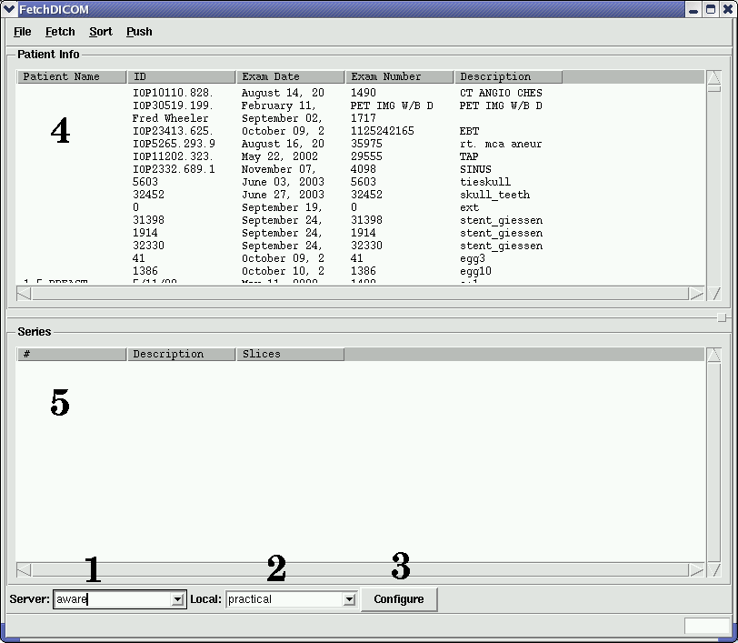
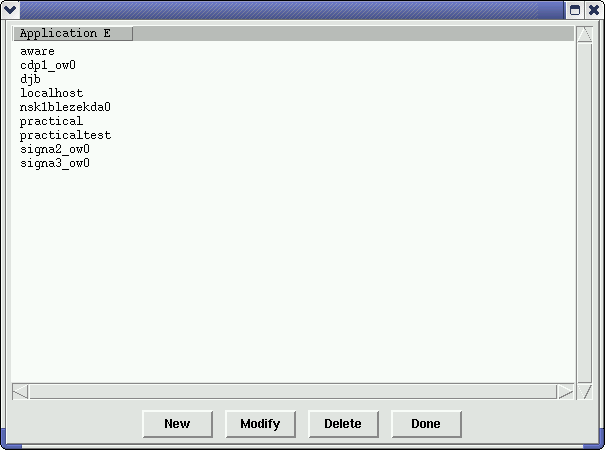

FetchDICOM
FetchDICOM is a program to interact with a DICOM server to fetch and push
images. Specifically, it uses the dcmtk to query and move images
from the server locally.
Definitions:
- Remote DICOM Server This is the server storing the images that
you wish to fetch. This is also the server to push images to. The
server may be an AW, a PACS system, or a scanner.
- Local This is the Application Entity of the local server. It
must match the definition stored on the Remote DICOM Server.
Sections:
Please contact Daniel Blezek (daniel.blezek@gmail.com)
for questions.
FetchDICOM Interface

- Remote DICOM Server selection
- Local Application Entity selection
- Configure Application Entities
- Patient List from remote server
- Series list from selected patient
DICOM Configuration
Server
On the DICOM server, you must define your local Application Entity. On
the AW, this is under "Network Manager". Add an entry for your machine,
so that you have this information:
- Application Entity: can be anything, but generally the name of your
machine, i.e. nsk1blezekda01
- Host: the hostname of your machine, i.e. nsk1blezekda01.crd.ge.com
- Port: 4006 is the default and commonly used DICOM communications port
- Query Retrieve Level: Patient or Subject is fine
- Storage Commitment: should be set to Yes
- Storage Provider Application Entity: use the same information as
above
- Host: hostname of your machine
- Part: 4006
FetchDICOM
Click the Configure button (#3) to bring up the application entity dialog.

Click on the "New" button to add an Application Entity for the remote DICOM
server. "Modify" will allow you to change the information for an existing
entry. "Delete" will remove an entry from the list. Click "Done"
when finished.
To see the list of patients on the server, select the server name from the
Server selection list (#1 in the GUI image above). This will automatically
fetch the list of patients from the server, if everything has been configured
properly. The list will appear in area #4. Selecting a patient
exam will fetch the information about the existing series into the list (area
#5).
Fetching Images
To fetch images from the server, select the patient from the list, or select
an individual series. Under the Fetch menu, select fetch. A dialog
box will allow you to select the directory in which to store the images.
The Fetch menu offers a set of options for sorting the fetched images.
- Exam/Series/Image####.dcm -- sort the images into sub-directories.
Exam is replaced by the exam number, etc...
- Modality/Station/Exam/Series/Image####.dcm -- same as above,
but with modality and station name added
- Modality/Exam/Series/Image####.dcm -- same as above, but without
station
- Image####.dcm -- Images only, no subdirectories.
A progress dialog will appear showing the status of the fetch.
Pushing Images
Images may be pushed to the server using the "Push Directory" command under
the Push menu item. A directory must be selected using the dialog box.
All DICOM files found in the selected directory and any sub-directories
will be sent to the server. A sorting process is performed first with
a progress bar. When the images are sorted, the will be sent to the
server, again with a progress bar indicating status.